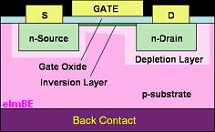

MOS Field
Effect Transistor or MOSFET
The
Metal-Oxide Semiconductor Field Effect Transistor
(MOSFET) or MOS
transistor is a type of transistor that consists of a
metal
layer, an
oxide layer, and a
semiconductor layer.
The semiconductor layer is usually in the form of
single-crystal
silicon substrate doped precisely to perform transistor action.
The oxide is usually in the form of a
silicon dioxide layer that
insulates the semiconductor layer from the metal layer.
The metal layer is used as contact for providing voltage inputs
to the MOS transistor.
The
MOS transistor consists of three terminals: a
gate, a
source, and a
drain.
These are equivalent to the base, emitter, and collector of a
bipolar transistor. The
metal layer of the MOS transistor serves as the gate, while the source
and drain are fabricated on the silicon substrate.
Like
a bipolar transistor, the current flowing through a MOS transistor is
controlled by the input at its
gate.
However, unlike a bipolar transistor which is controlled by the
amount of current into its base, a MOS transistor is controlled by the
voltage
level at its
gate.
The
source and drain of a MOS transistor are created on the silicon
substrate in such a way that they are 'sandwiching' the gate.
The source and drain are doped to be of the same material type,
which should be different from the doping received by the substrate.
A MOS transistor is referred to as a P-channel MOSFET, or
PMOS,
if the
source and
drain
are
p-type, and the substrate is n-type.
It is an N-channel MOSFET, or
NMOS, if the
source
and
drain are
n-type, and the substrate is p-type.
The
area under the gate is known as the
channel. The conductivity of the channel may be controlled through the
voltage
level applied to the gate.
For instance, in an NMOS, the major carrier is the electron, so
the channel becomes more conductive by applying a positive voltage at
the gate, which tends to attract more electrons from the substrate into
the channel. The layer formed by
these attracted electrons is known as the
'inversion
layer',
since electrons are the minority carriers of the p-substrate.
|
 |
|
Figure 1. Structure of an Enhancement MOSFET |
If the source
of the NMOS is more negative than the drain while a sufficiently
positive voltage is applied to the gate, current would pass through the
transistor. Removing the
positive voltage at the gate would significantly decrease the
conductivity of the channel, constricting the flow of electrons.
A MOS transistor operating in this manner is known as an
enhancement-mode
MOS transistor, because it is normally open and conducts only when the
channel is 'enhanced.'
On the other hand, a normally conducting transistor is known as a
depletion-mode
transistor, since its conduction is controlled by 'depleting' the
normally-present channel.
The
MOS transistor is extensively used in
digital
circuits because it is a
very good and efficient switch. It
practically consumes no current at the gate because the gate is isolated
from the channel by the oxide layer, and the channel conductivity is
dependent only on the potential at the gate.
See Also:
What is a Semiconductor?; p-n Junction;
Diode;
Bipolar Transistor;
JFET;
IC Manufacturing
HOME
Copyright
©
2001-2006
www.EESemi.com.
All Rights Reserved.